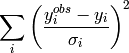
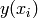
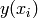

Fitting in Mantid is the process of trying to fit a model to some data, where data may originate from measurements at beamlines, simulations or in fact can be any data which has the form:
 - could for example be a TOF value, a Q value or a temperature value, or can represent a point in a multi-dimensional space, for example, could represent
- could for example be a TOF value, a Q value or a temperature value, or can represent a point in a multi-dimensional space, for example, could represent 
 - is the observed or calculated value at
- is the observed or calculated value at  - is an error estimate of
- is an error estimate of Error estimates are important in data reduction and data analysis and see here for information about how Mantid deals with error propagation. However, errors may optionally not be used in fitting, by choosing a cost function that does not depend on these.
A cost function (also sometimes called a figure of merit or goodness of fit) is some metric which attempts to give an indication as to how good a given model fits some data. The by far most common way of measuring the difference between a model and data, for example for fitting neutron faciltiy data, is to use a so-called least-squares cost function which has the form

where  is shorthand for , i.e. the
is shorthand for , i.e. the  -value
calculated at the observed value
-value
calculated at the observed value  from a model, and
from a model, and  and
and  the observed and error estimate values at respectively.
Mantid supports a number of other cost functions and these are described here.
The above cost function is the default Mantid cost function. If you use the
Fit algorithm this cost function goes under the name
‘Least squares’ and in some placed in Mantid is referred to as Chi-sq.
the observed and error estimate values at respectively.
Mantid supports a number of other cost functions and these are described here.
The above cost function is the default Mantid cost function. If you use the
Fit algorithm this cost function goes under the name
‘Least squares’ and in some placed in Mantid is referred to as Chi-sq.
Consider the simple example where a model depends on just one fitting parameter,
here called Bob. The ‘s then only depend on this parameter and hence the same
is true for the cost function. Below is shown a made up example of how such a
cost function could depend on the fitting parameter Bob:

The primary problem which Mantid deals with is that of local minimization, also referred to as downhill minimization. Referencing to the figure above, this corresponds either to reach target B through fitting from the value of the fitting parameter shown by the red label 1 or 2, or reach target A from the parameter position 3. This is the common problem in reducing/analysing where ‘good’ initial values of the fitting parameters are known, for instance from: knowledge of the instrument, the scientific problem in question, or a peak search algorithm is assumed to provide good initial fitting parameter values.
Local minimization algorithms can be grouped into strictly downhill minimizers and local minimizers, where the former will find a lower value whereas for the latter this is not guaranteed. For a description of the minimizers Mantid supports see here. The default Mantid minimizer is Levenberg-Marquardt, which is a strictly downhill mimimizer. Mantid has a plug-in mechanism for added minimizers and hence the number of minimizers which Mantid supports is not static. For example recently a minimizer called FABADA was added which is aimed at fitting for Bayesian data analysis. The minimizers supported in Mantid perform differently in terms of accuracy and run time requirements. For a comparison of different minimizers see <FittingMinimizers>. New fitting minimizers can be added through the plug-in mechanism or as is demonstrated in the section entitled ‘Global fitting’ can be scripted from minimizers that already exist.
Fitting in Mantid is more than just selecting a cost functions and minimizer. The Mantid fitting framework it is a pluggable framework that at a top level looks like this

Fit is the algorithm that puts together the users choice of minimizer (IFuncMinimizer) and cost function (ICostFunction), but also the fit function (IFunction). The fit function defines the model that is used to model the data. The user defined fit function can be a complex mathematical product, sum and convolution of other fit functions. For more information for how to create a model see the documentation for Fit, the Fitting section of the Mantid Introduction tutorial (http://www.mantidproject.org/Mantid_Basic_Course) for how to do this using the Fit Function Toolbox and this Python fit tutorial: http://www.mantidproject.org/Introduction_to_Python_Fit_Functions.
From the class diagram above note fitting also support constraints (IConstraint), see here for more on this. Further fitting parameters can be tied to specific values or tied to other fitting parameters through mathematical formulas.
Mantid can fit multiple datasets to one model. This can perhaps most easily be done using the Multi-Dataset Fitting interface (http://www.mantidproject.org/Fitting_QENS_I%28Q,_t%29).
Sequential fitting is simply the sequential fitting of datasets using the same fit function, and where, for example, fitting parameters obtained from one fit may be used as starting values in a next fit and so on. For an example of sequential fitting see here: http://www.mantidproject.org/MantidPlot:_Simple_Peak_Fitting_with_the_Fit_Wizard
If you are fitting using the Fit Function toolbox or the Multi-dataset Fitting interface then you get visual feedback as to how well the fit was.
If you are scientists experienced in fitting a particular type of data then the absolute value of the cost function may be sufficient in itself to tell whether a fit is successful.
As described in the Fit algorithm documentation this algorithm can output the result of parameters + error estimates and a matrix called the correlation matrix, which tells how parameters are correlated. The information from the correlation matrix and the error estimates (which happens to be the square root of the diagonal elements of the correlation matrix) can help highlight how much you can trust the fit. For example, if some fitting parameters are strongly correlated you may consider trying to introduce ties to help reduce this correlation.
The Fit algorithm returns an OutputStatus property, which can be monitored.
Create an algorithm or code that aims to be clever, for a given fitting problem, beyond that of the generic Fit algorithm. An example of this is FitPeak which aims to fit single peaks with some checks to ensure results are physical.
If you remain unsure if a given fit was successful then e.g. try the tool CalculateChiSquared, which allows inspection of the cost function in the neighbourhood of a found minimum.
As of this writing the primary use of Mantid fitting is to do local minimization.
Many well known global fitting algorithms are very simple in their implementation.
To demonstrate an example of this, below is shown how to script a global fitting algorithm, which for example in http://dx.doi.org/10.1107/S0021889810008113 has been shown to be competitive with a tuned Simulation Annealing algorithm (https://en.wikipedia.org/wiki/Simulated_annealing) implementation used for solving crystal structures from powder diffraction data.
Example: Multi local minimizations from random starting points
# This script demonstrates a global fitting algorithm, which simply does local minimizations from random
# starting positions of the fitting parameters.
# For this demo example, just one fitting parameter is globally fitted, the peak center of a Gaussian peak
# Please bear in mind the example here is to demonstrate this algorithm not provide a real global fitting problem
from random import random
from time import sleep
data = Load('HRP39182.RAW',LoadLogFiles=False, SpectrumList="1")
# Specify the fitting interval
startX = 93000
endX = 93300
# Set best very high value of the cost function to ensure lower is found at first attempt
costFuncBest = 1e+100
# Do local minimization from randow starting positions
numOfRandowAttempts = 10
for i in range(10):
# pick a randow value for the peak centre fitting parameter in the fitting interval
tryCentre = str(startX + random()*(endX-startX))
# Do a fit from this starting value of the peak centre fitting parameter
# Note choice of local minimizer will affect the outcome
d0, costFuncVal, d1, d2, d3 = Fit(InputWorkspace='data', WorkspaceIndex=0, \
StartX = startX, EndX=endX, Output='fit', \
Function='name=Gaussian,Height=10,PeakCentre='+tryCentre+',Sigma=20',
Minimizer='Conjugate gradient (Fletcher-Reeves imp.)')
# Here simply keep record of the best fit found, but this could easily be extended to
# keep a record of all the minima found
if costFuncVal < costFuncBest:
costFuncBest = costFuncVal
# here keep clone of best fit
CloneWorkspace(InputWorkspace='fit_Workspace',OutputWorkspace='fitBest')
# Uncomment the sleep if would like to watch this algorithm trying to
# find the global minima (graphically and/or from command line)
# print costFuncVal
# sleep(2)
print 'test'
Category: Concepts